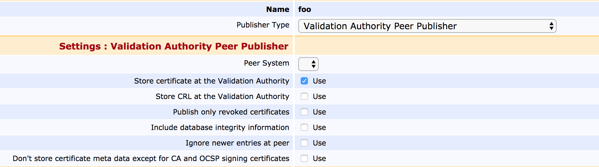

EJBCA 6.13 Release Notes
What now, another feature release so soon? Fear not, all is well - instead we felt that some of the work we've put in to the trunk should be made available as soon as possible.
We hope that as many of you as possible have had a chance to check out the ConfigDump tool we released with EJBCA 6.12, please give us any available feedback that we can plug in to future versions.
The EJBCA VA is GDPR Ready
We've added an option to the VA Peer Publisher restrict publishing identifying certificate metadata from the CA to VA, such as subject DN, SAN or usernames.

Key Ceremony Utilities added to the RA Web
During key ceremonies, auditors typically require a copy of all CA Certificate fingerprints. To spare you the process of downloading CA certificates and computing the fingerprints manually using a third-party tool, we've added the following functionality to the RA Web:
Download Fingerprints: Downloads a YAML text document with the CA Certificate fingerprints of all CAs you have access to.
Download Certificate Bundle: Downloads a compressed zip file containing the CA certificates of all CAs you have access to.
For more information, see RA Web CA Certificates and CRLs.
Roadmap Update
As always, we tend to be restrictive with discussing our roadmap, but one very long awaited project we're very pleased to finally have time to redo is the CA UI, a point of contention which we're sure all of you are painfully aware of. As refactoring interfaces is always a minefield we'll be taking it in minor steps, beginning with the conversion of the antiquated JSP pages into more modern-ish JSF before beginning to make more concrete improvements in usability. Expect to see some pages in the UI slightly change appearance in the autumn, and keep tuned to our blog for more updates on this subject.
Upgrade Information
Read the EJBCA 6.13 Upgrade Notes for important information about this release. For upgrade instructions and information on upgrade paths, see Upgrading EJBCA.
Change Log: Resolved Issues
For full details of fixed bugs and implemented features in EJBCA 6.13, refer to our JIRA Issue Tracker.
Epics
ECA-5792 - Allow peer publisher to only publish required data for OCSP
ECA-6727 - Revocation of Throwaway Certificates
New Features
ECA-6734 - New DB Table (Part of Alpha)
ECA-6737 - New SSB with basic NoConflictCertificateData functionality (Part of Alpha)
ECA-6738 - CA config changes + Admin GUI mods
ECA-6739 - Certificate lookup from PublishQueueServiceWorker
ECA-6740 - Changes in CRL generation logic
ECA-6741 - Update Database CLI
ECA-6743 - Modify EjbcaWS.revokeCert call (Part of Alpha)
ECA-6744 - Modify EjbcaWS.revokeCert call to accept more meta data
ECA-6745 - Manual tests with asynchronous replication
ECA-6746 - ECA-QA click test for Revocation of Throwaway Certs
ECA-6748 - System tests: WS call (Part of Alpha)
ECA-6750 - System tests: VA Publisher with Throwaway certs
ECA-6751 - Performance tests: Check existing tests (Revoke & OCSP)
ECA-6752 - Performance tests: Perform tests (before & after)
ECA-6753 - Document revocation of throw away certs
ECA-6789 - Edit CA page should include an option to select which certificatedata table to write to
Tasks
ECA-6756 - Add manual test of OCSP for UnidFnr
ECA-6778 - Update all occurrences of ocsp.extensionoid and extensionclass in documentation
Improvements
ECA-4337 - EJBCA client toolbox PKCS11HSMKeyTool generate command should not overwrite existing keys
ECA-6362 - Document all pages in the UI that are going to be deprecated by EJBCA 7.0
ECA-6572 - Remove timeStampClient.jar from documentation
ECA-6762 - Make existing EjbcaWS.revokeCert call work without certificate data being present
ECA-6764 - Fix missing header and id in test related classes.
ECA-6766 - System test of publishing of throw away certificate revocation status, with mock publisher
ECA-6767 - CertificateDataWrapper should handle revoked throw away certificate case
ECA-6772 - GUI: Usability about GeneralNames type fields (e.g. for Subject Alternative Name)
ECA-6779 - Update Confluence documentation for QC-Statements
ECA-6786 - VA Publisher should not update if revocation reason is permanent
ECA-6791 - Create separate CRUD bean for CertificateData and NoConflictCertificateData, for database queries etc.
ECA-6795 - CMP: don't log stack trace if CMP alias does not exist
ECA-6796 - Check new option "Accept revocations for non-existing entries" in backend code
ECA-6836 - Make it possible to issue throw-away certificates with publishers enabled
ECA-6837 - Restrict "Accept revocation of non-existing certificates" option to throw-away CAs only
ECA-6844 - Create fingerprint sheet in RA web
ECA-6850 - Add backend code for selecting which certificate data table to write to.
ECA-6856 - Use consistent format of library license references
ECA-6859 - Improved naming and ordering of Throw Away Certificate Revocation options
Bug Fixes
ECA-6717 - Remove clientToolBox dependency on ejbca-ejb
ECA-6728 - NPE when changing Approval Profile type
ECA-6761 - Republish/re-activate in the Admin Web passes html encoded data to API
ECA-6768 - DirectoryName in CMP (RA mode) requests doesn't work
ECA-6771 - GUI: Wrong designation of QC-Statements "Name Registration Authorities"
ECA-6775 - Unidfnr entity bean must handle longtext datatype.
ECA-6797 - ConfigDump does not find certain profiles etc. when --exclude option is used
ECA-6800 - junit ProtocolOcspHttpTest freezes
ECA-6823 - checkRevocationStatus returns wrong value for throw away CAs
ECA-6848 - Regression: 'Provide request info' hidden when only 'Select key algorithm' should be
ECA-6852 - Upgrade ocsp extensions does not account for '*' prefix